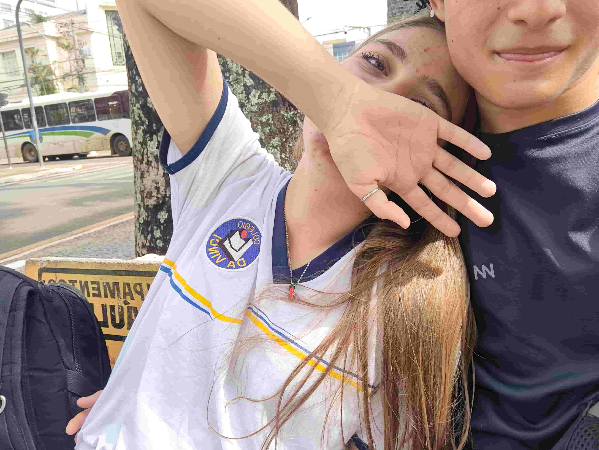
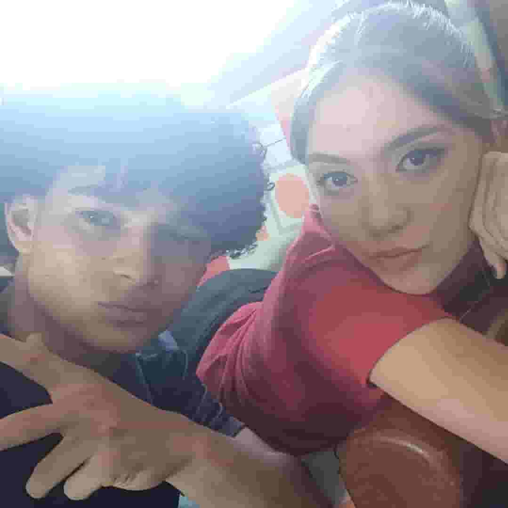
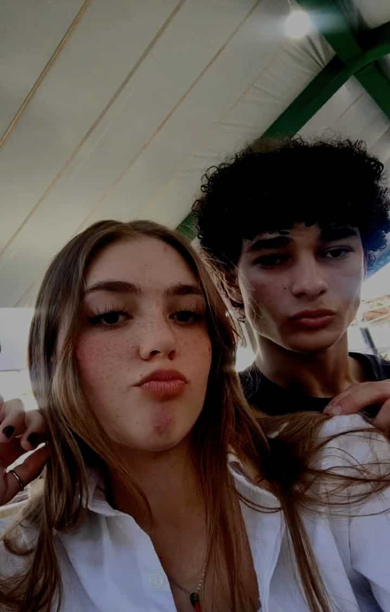
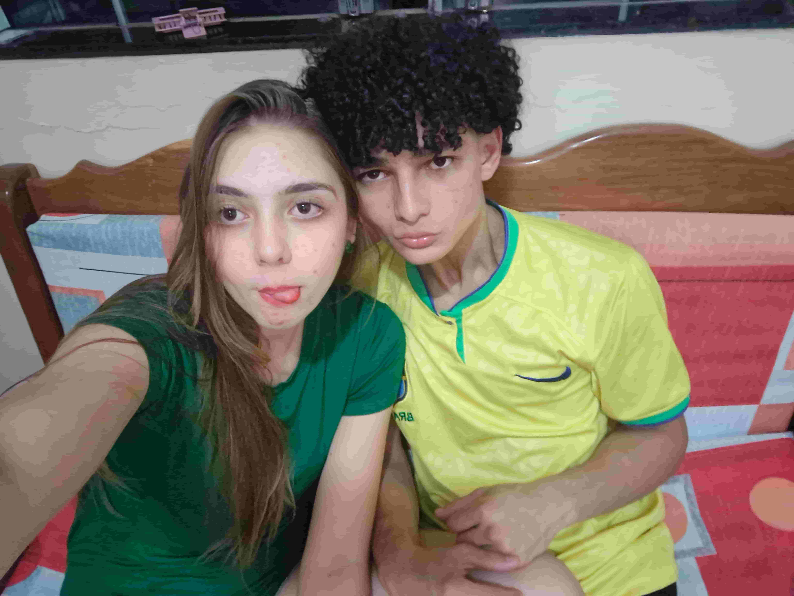
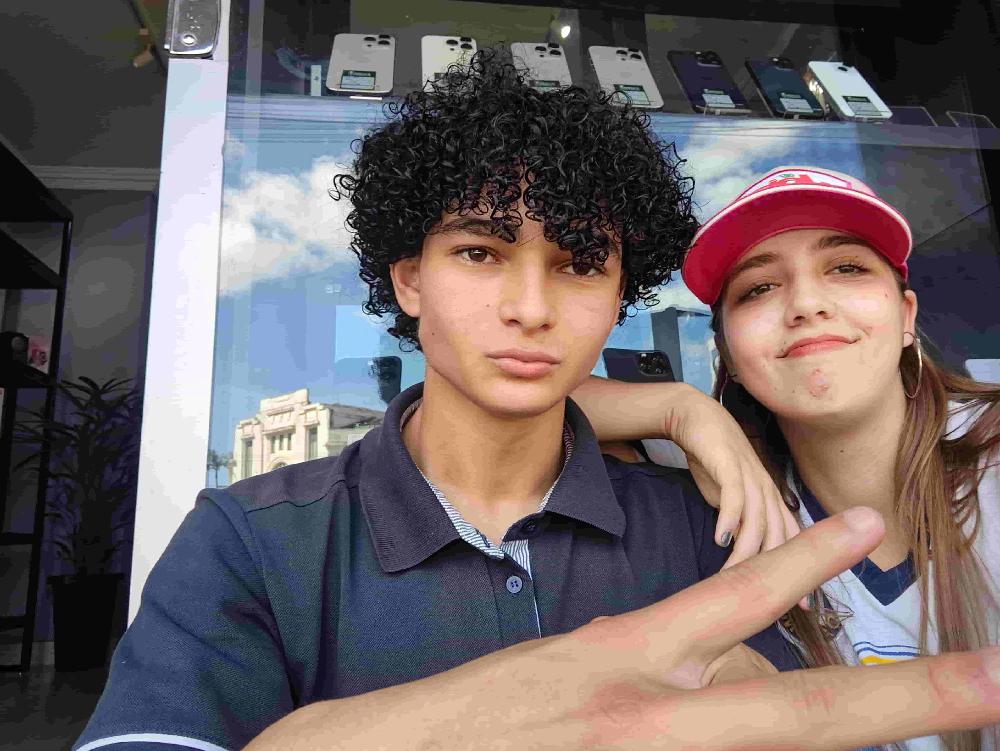

Ieda, meu amor
Rola a tela para baixo... fiz cada detalhe com muito carinho para você.
🌹Eu com Meu Amor🌹
E no meio de tanta gente eu encontrei você.

Lado a Lado
Construindo nossa história

Próxima Parada
Colecionando novas memórias

De Mãos Dadas
Desbravando o mundo juntos

Para Sempre
O nosso melhor destino

Singular
Apenas você e eu
Minha Pequena Declaração
Ieda, meu amor,
Escrevo-te esta carta com a mais profunda ternura. Faço-o porque, às vezes, o peito torna-se pequeno demais para abarcar a imensidão do que sinto por ti. Ao traçar estas linhas, busco traduzir em palavras aquilo que o silêncio não pôde confessar.
Desde que entraste na minha vida, algo mudou dentro de mim. Os dias comuns tornaram-se mais leves, os sorrisos mais sinceros e os momentos mais simples passaram a ter um significado especial. Sem perceber, passei a procurar teu rosto entre as multidões, tua voz entre os ruídos e tua presença em cada pensamento feliz.
Basta um único olhar teu para que o tempo pare e me hipnotize; basta um sorriso para iluminar tudo o que há em mim. Ao teu lado, o mundo ganhou cores que eu sequer sabia existir, e a simples certeza da tua existência é o motivo eterno para o brilho nos meus olhos.
Admiro tua maneira de ser, tua força, tua doçura e todas as pequenas coisas que fazem de ti alguém tão única. Cada conversa, cada risada e cada instante compartilhado contigo tornou-se uma lembrança preciosa guardada com carinho no meu coração.
Hoje, neste Dia dos Namorados, quero dar um porto seguro a tudo isso que transborda em mim. Não quero apenas celebrar o amor que já sinto, mas construir novas memórias, viver novos sonhos e caminhar lado a lado contigo em cada capítulo que o futuro nos reservar.
Por isso, com o coração cheio de esperança, carinho e certezas, faço-te a pergunta mais importante que poderia fazer: